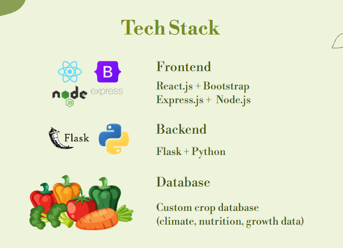

Hi there, my name is Tristan Santor, and I'm a new graduateComputer Science and Software Engineering student at the University of Washington Bothell.
I have a deep passion for technology, driven by my curiosity about how different systems interact and how simple lines of code can have a significant impact. My main interests lie in AI and full-stack development, as well as cybersecurity. I have experience working with C++, Java, and Python, and I'm currently learning the Qt framework to develop exciting applications in the future.
Outside my software interests, I served as Activities Chair for FASA Sa UWB and played club volleybal at the UW Mens Club Team for 3 Years!.
Inventory
Website Privacy Grader
Catalyst · Capstone · Privacy & Security
A tool that scans any website and grades its privacy and security practices, built from scratch as a full capstone project: a Python/Playwright backend, FastAPI, a React frontend, and a custom risk-scoring algorithm backed by real-world tracker intelligence data.
Enter a URL and the tool launches a real headless browser to observe exactly what the site does, which third-party companies it contacts, what cookies it sets and how securely, which browser security headers it enforces, and what TLS configuration it uses. It then produces a letter grade (A–F) and a numeric privacy score, backed by a transparent, documented scoring methodology.
Python
Playwright
FastAPI
React
Risk Scoring
Rate My Professor AI
Talisman · RAG Chatbot · Team of three
Many college students spend hours researching which professor best fits how they learn. Our team of three built an AI-powered chatbot using OpenRouter. With Retrieval-Augmented Generation (RAG) and the Pinecone API, the AI delivers more accurate, relevant information. We used Puppeteer to scrape HTML and convert it into structured JSON, letting the AI generate detailed, organized insights about specific professors.
OpenRouter
RAG
Pinecone
Puppeteer
Plantable
Seed · Hackathon · Health & Gardening

We all want to eat healthier, but fresh produce can be expensive, hard to find, or confusing to pick out at the store. Plantable makes it simple by helping people grow their own food, tailored to their needs and local environment.
Users enter their region, climate and time commitment, and Plantable generates a list of crops that thrive where they live — with growing instructions, nutritional benefits and easy recipes. We built it on a custom crop database enriched with climate, nutrition and growth data, with our biology major leading the health content and user experience.
The hardest part was pairing scientific accuracy with a design that works for people who have never gardened. Next up: a seasonal planting calendar, small-space garden planning for balconies and windowsills, a community forum, dietary filters, and a mobile app.
React
Bootstrap
Node.js
Express.js
Flask
Python
Summon Signs
Golden signs glow on the ground. Touch one to summon Tristan to your world.